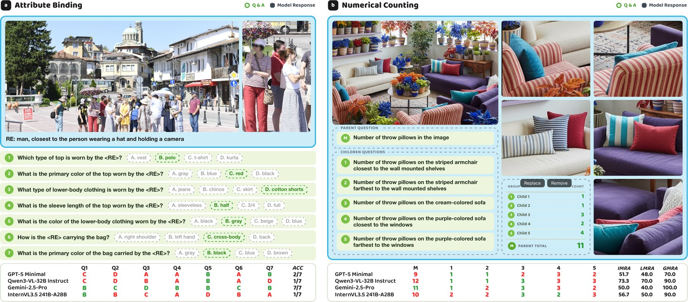
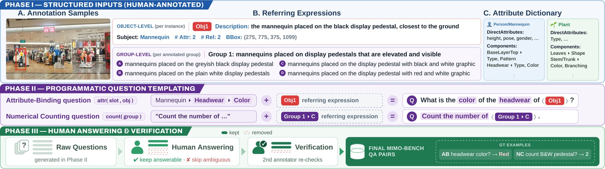
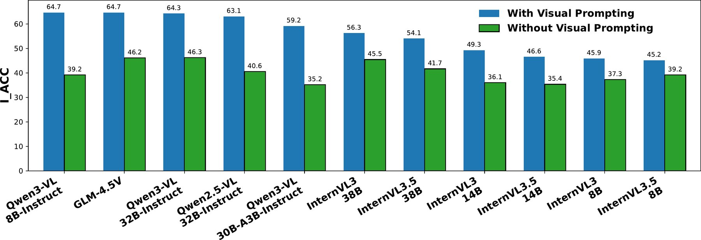
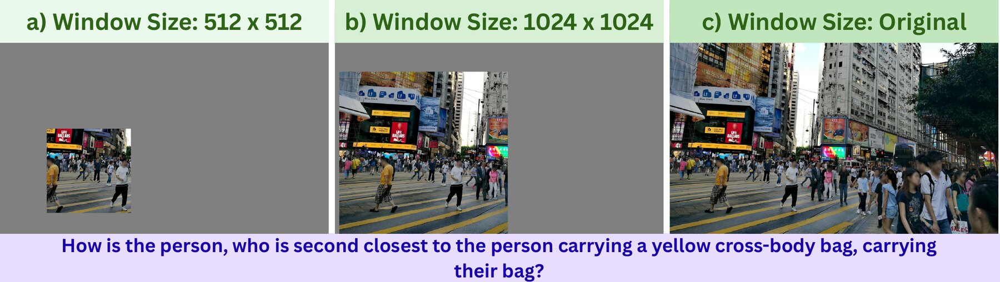

What do MLLMs know about “Waldo”?
Evaluating Visual Reasoning under Multi-Instance Multi-Object Challenges
Abstract
Recent advances in Multimodal Large Language Models (MLLMs) have led to significant progress in visual reasoning capabilities. However, existing benchmarks curate image-question pairs pertaining to object categories with few instances, enabling trivial object referencing and limited visual ambiguity. In this work, we introduce MIMO-Bench, a benchmark for evaluating MLLMs in a Multi-Instance per Multi-Object categories (MIMO) setting. Each image-question pair in our benchmark pertains to instances belonging to object categories with multiple instances. The presence of such similar feature distractors causes hindrance in basic visual reasoning tasks, necessitating the referring expression to be composed of multiple visual subtasks to uniquely and unambiguously identify the target object. MIMO-Bench comprises 3,802 image-question pairs across attribute binding and numerical counting tasks. Despite impressive performances on existing benchmarks, both SOTA open-source (InternVL, QwenVL) and proprietary (Gemini, GPT-5) models exhibit substantially lower performance on MIMO-Bench, highlighting their limitations in the MIMO setting.
Key Findings
1. A benchmark for dense scenes
MIMO-Bench contains 3,402 attribute-binding and 400 numerical-counting questions over scenes with many instances per object category.
2. Current MLLMs struggle
On real images, the best zero-shot model reaches only 52.8% IACC on attribute binding and 56.7% IMRA on counting. Humans score close to 90%.
3. Referring expressions and distractors are key bottlenecks
Visual prompting improves IACC by about 15.5 points on average. Graying and inpainting out distractors improves performance further.
4. Iterative visual access helps
Letting the model choose a relevant region and look again consistently improves accuracy. Chain-of-Thought prompting does not reliably help.
MIMO-Bench
MIMO-Bench evaluates MLLMs in scenes where dense same-category instances act as natural visual distractors. Telling them apart requires compositional referring expressions (REs) that combine attributes, actions or states, and relations to neighbouring objects. The benchmark covers two tasks, on both real (SA-1B) and synthetic images:
- Attribute Binding (AB): multiple-choice questions that check whether the model attaches each specified attribute to the same target instance.
- Numerical Counting (NC): open-ended counting of the instances that match an RE. Counts are organised hierarchically, so region-level child counts sum to their parent count.


Results
We evaluate API-accessed and open-weight MLLMs (Gemini, GPT-5, GLM, InternVL and Qwen-VL families) against chance and human baselines. Both tasks are far from solved. On real images, the best model reaches only 52.8% on attribute binding, about 36 points below humans, and several open-weight models barely beat always guessing the most common answer.
| Model | Attribute Binding (AB) | Numerical Counting (NC) | ||||||||
|---|---|---|---|---|---|---|---|---|---|---|
| Real | Synthetic | Real | Synthetic | |||||||
| IACC | GACC | IACC | GACC | IMRA | LMRA | GMRA | IMRA | LMRA | GMRA | |
| Chance & Human Baselines | ||||||||||
| Chance (Random) | 15.8 | 15.6 | 15.8 | 15.3 | – | – | – | – | – | – |
| Chance (Majority) | 34.3 | 35.5 | 34.3 | 33.1 | – | – | – | – | – | – |
| Human | 89.3 | 86.7 | 85.7 | 87.5 | 87.7 | 86.4 | 90.1 | 89.6 | 87.4 | 92.0 |
| API-accessed MLLMs | ||||||||||
| Gemini-3.5 Flash (Low) | 45.5 | 44.8 | 73.0 | 75.6 | 52.5 | 49.4 | 46.7 | 66.9 | 66.0 | 67.2 |
| Gemini-3.1 Pro Preview (Low) | 46.5 | 46.3 | 71.8 | 73.5 | 56.7 | 55.8 | 63.3 | 64.0 | 62.6 | 64.1 |
| Gemini-2.5 Flash | 51.3 | 51.9 | 48.1 | 42.1 | 30.0 | 28.3 | 38.3 | 47.2 | 41.2 | 51.4 |
| Gemini-2.5 Pro | 49.1 | 49.5 | 47.2 | 44.9 | 37.3 | 24.2 | 71.7 | 56.1 | 53.2 | 63.9 |
| GPT-5 (minimal) | 32.0 | 31.2 | 28.0 | 24.1 | 45.8 | 47.5 | 36.7 | 43.0 | 40.8 | 47.1 |
| GPT-5 (medium) | 52.8 | 53.4 | 49.8 | 48.1 | 51.5 | 55.0 | 56.7 | 47.5 | 42.8 | 54.3 |
| GLM-4.5V | 50.3 | 50.0 | 41.7 | 33.8 | 33.9 | 36.2 | 38.3 | 47.3 | 48.5 | 38.6 |
| InternVL3.5-241B-A28B | 47.6 | 45.2 | 43.3 | 42.9 | 47.8 | 50.0 | 39.5 | 51.2 | 50.6 | 50.1 |
| InternVL3-78B | 40.2 | 40.3 | 37.6 | 35.0 | 38.9 | 43.3 | 38.3 | 36.6 | 34.2 | 34.3 |
| Locally evaluated open-weight MLLMs | ||||||||||
| Qwen3-VL-32B-Instruct | 47.7 | 48.5 | 47.0 | 45.0 | 38.5 | 35.4 | 55.0 | 53.2 | 54.8 | 49.8 |
| Qwen3-VL-8B-Instruct | 42.4 | 42.0 | 36.2 | 32.5 | 34.2 | 28.3 | 43.3 | 47.6 | 48.9 | 35.5 |
| Qwen3-VL-30B-A3B-Instruct | 36.6 | 33.2 | 28.2 | 27.1 | 25.0 | 35.4 | 20.0 | 41.0 | 44.5 | 38.8 |
| Qwen2.5-VL-72B-Instruct | 38.6 | 38.7 | 50.6 | 45.1 | 30.8 | 35.8 | 23.3 | 46.2 | 47.0 | 43.1 |
| Qwen2.5-VL-32B-Instruct | 38.4 | 36.9 | 41.2 | 41.0 | 28.9 | 28.3 | 28.3 | 42.4 | 40.0 | 47.2 |
| Qwen2.5-VL-7B-Instruct | 35.5 | 35.2 | 36.4 | 34.3 | 27.3 | 30.0 | 31.7 | 33.9 | 33.5 | 27.2 |
| InternVL3.5-38B | 40.9 | 40.3 | 46.5 | 44.6 | 27.3 | 35.4 | 20.0 | 42.5 | 44.3 | 42.0 |
| InternVL3.5-14B | 32.1 | 31.7 | 39.0 | 40.1 | 31.1 | 37.5 | 16.7 | 42.5 | 38.9 | 47.5 |
| InternVL3.5-8B | 38.6 | 38.1 | 44.2 | 43.7 | 36.1 | 45.8 | 13.3 | 44.2 | 41.1 | 45.1 |
| InternVL3-38B | 42.3 | 42.5 | 48.3 | 44.7 | 33.2 | 49.0 | 20.0 | 45.6 | 45.3 | 39.6 |
| InternVL3-14B | 35.9 | 35.1 | 39.7 | 38.9 | 26.8 | 32.5 | 6.7 | 37.1 | 34.8 | 40.7 |
| InternVL3-8B | 34.4 | 35.5 | 38.9 | 37.2 | 26.7 | 36.7 | 5.7 | 37.3 | 41.3 | 24.3 |
| GLM-4.1V-9B-Thinking | 34.6 | 36.2 | 38.7 | 35.3 | 27.3 | 25.0 | 50.0 | 24.9 | 32.6 | 20.0 |
Scores are percentages. Bold = best model and underline = second best. IACC is per-question accuracy, and GACC averages accuracy per target object. I/L/GMRA are Mean Relative Accuracy over all, localized and whole-image counting queries.
What Makes MIMO Hard?
Referring expressions are a bottleneck
Replacing the text description with a box drawn on the target raises accuracy by +15.5 points on average (+6.0 to +25.5) for every model. The gain grows with how compositional the expression is. Even then, no model exceeds ~65%.

Distractors hurt
Graying out, blurring or inpainting away the surrounding same-category instances generally improves accuracy, even though the target's scale and the question stay the same.

Not just resolution
Cropping a window around the target (MIMO-Crop) lifts the average from 39.5 to ~48.5, still far below the same models' ~76 on standard benchmarks.
Counting errors flip with density
Models over-count sparse targets by including look-alike distractors, and increasingly under-count dense ones (bias of −9.6 at 14 objects).
Looking again helps
Letting a model pick a region and re-answer from that crop improves every model tested, by up to +16.9 points.
More reasoning doesn't reliably help
Thinking modes and Chain-of-Thought prompting help some models and hurt others.
BibTeX
@article{mundra2026mimobench,
title={What do MLLMs know about ``Waldo''? Evaluating Visual Reasoning under Multi-Instance Multi-Object Challenges},
author={Mundra, Saumya and Mondal, Ajoy and Balasubramanian, Vineeth N and Jawahar, C. V.},
journal={Preprint},
year={2026}
}